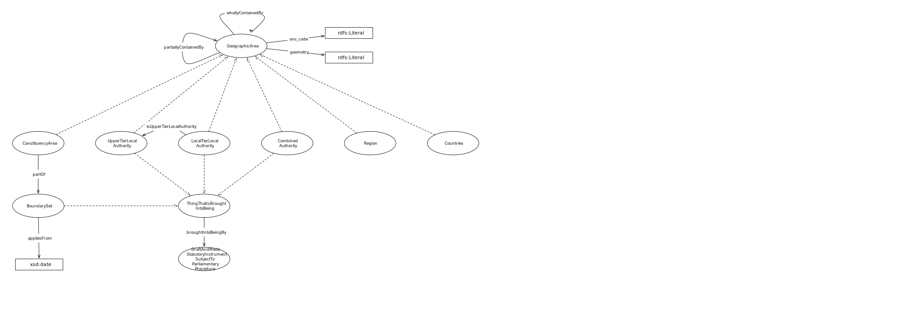

IRI: http://parliament.uk/ontologies/geographic-area/BoundarySet
IRI: http://parliament.uk/ontologies/geographic-area/CombinedAuthorityArea
IRI: http://parliament.uk/ontologies/geographic-area/ConstituencyArea
IRI: http://parliament.uk/ontologies/geographic-area/ConstituencyAreaType
IRI: http://parliament.uk/ontologies/geographic-area/Country
IRI: http://parliament.uk/ontologies/geographic-area/EnglishRegion
IRI: http://parliament.uk/ontologies/geographic-area/GeographicArea
IRI: http://parliament.uk/ontologies/geographic-area/GeographicAreaDefinedByStatute
IRI: http://parliament.uk/ontologies/geographic-area/LowerTierLocalAuthorityArea
IRI: http://parliament.uk/ontologies/geographic-area/StatutoryThing
IRI: http://parliament.uk/ontologies/geographic-area/UpperTierLocalAuthorityArea
IRI: http://parliament.uk/ontologies/geographic-area/appliesTo
IRI: http://parliament.uk/ontologies/geographic-area/boundarySetEstablishedBy
IRI: http://parliament.uk/ontologies/geographic-area/definedBy
IRI: http://parliament.uk/ontologies/geographic-area/definedWithin
IRI: http://parliament.uk/ontologies/geographic-area/hasConstituencyAreaType
IRI: http://parliament.uk/ontologies/geographic-area/isAlsoUpperTierLocalAuthorityArea
IRI: http://parliament.uk/ontologies/geographic-area/partlyContainedBy
IRI: http://parliament.uk/ontologies/geographic-area/whollyContainedBy
IRI: http://parliament.uk/ontologies/geographic-area/geometry
This HTML document was obtained by processing the OWL ontology source code through LODE, Live OWL Documentation Environment, developed by Silvio Peroni.